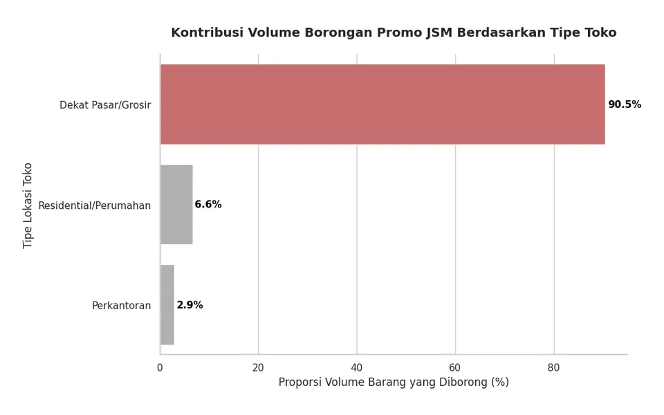

Retail analytics · Hypothesis testing
Weekend promo leakage at a minimarket chain
Business question: are discounted weekend (JSM) promo items going to households, or being bought in bulk by resellers?
- Python
- pandas
- NumPy
- SciPy
- statsmodels
- Matplotlib
- Seaborn
- Jupyter
- 8.1→39.9%
- Share of bulk purchases, ordinary days vs. promo days (8.14% vs. 39.92%).
- 90.3%
- Share of promo-day bulk receipts made at stores near markets or wholesalers (19,763 of 21,886).
- 72.0%
- Share of promo-day bulk transactions that used a member card, which points to an audit target.